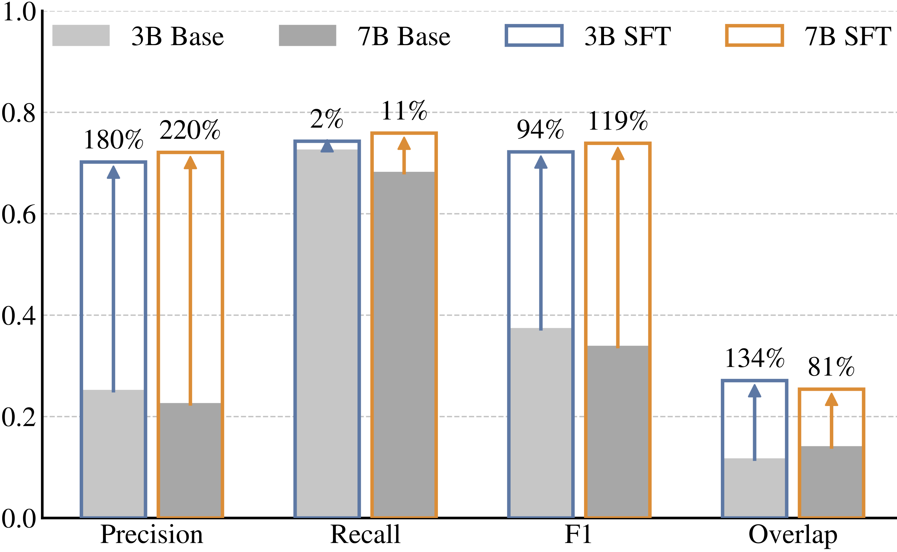
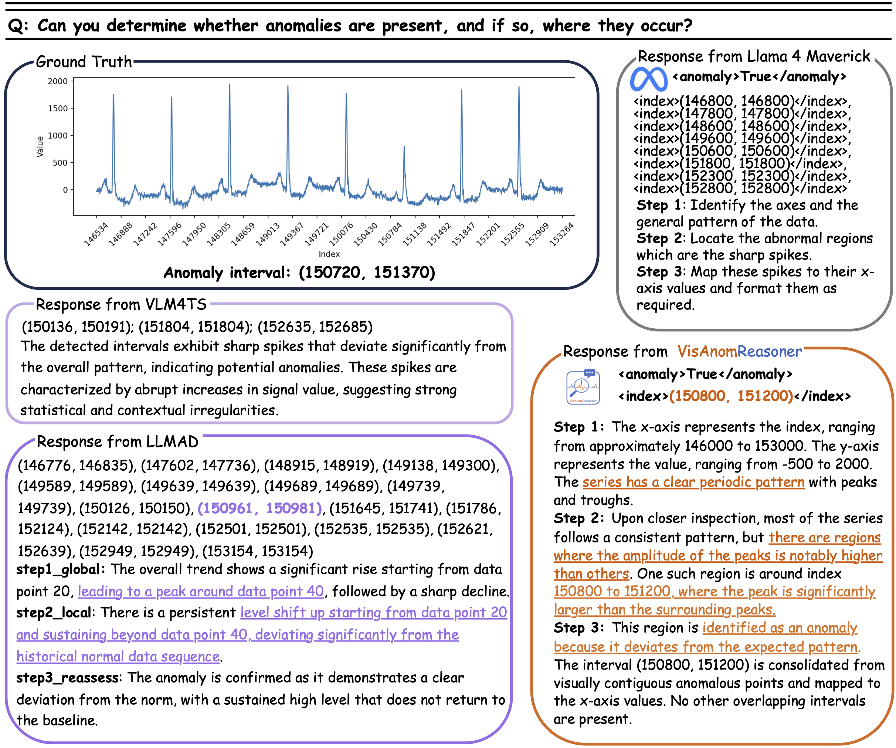

- VisAnomBench provides explanation-augmented supervision. We introduce VisAnomBench, an explanation-augmented benchmark constructed from four public time-series anomaly detection datasets. Each plot is paired with anomaly interval annotations and temporally grounded, step-by-step explanations. Reasoning traces from multiple large VLMs are selected using fine-grained rewards for anomaly localization, visual groundedness, axis awareness, and clarity. The benchmark contains 2,576 training and 740 held-out test time series.
- VisAnomReasoner jointly localizes and explains anomalies. We develop a parameter-efficient vision-language model by supervised fine-tuning Qwen2.5-VL-3B and Qwen2.5-VL-7B on VisAnomBench. Structured outputs separate anomaly decisions, interval localization, and reasoning, allowing the model to explain spikes, level shifts, periodic deviations, and other anomalies using evidence in the plotted time series.
- Evaluation demonstrates accurate localization and cross-benchmark transfer. VisAnomReasoner improves precision and F1 by at least 21.23 and 23.87 percentage points on VisAnomBench. On TSB-AD-U, it improves precision and F1 by 9.57 and 13.39 percentage points, respectively, demonstrating generalization beyond the training benchmark.
- Ablations isolate the benefit of explanation-augmented supervision. Comparisons between pretrained models, interval-only fine-tuning, and reasoning-augmented fine-tuning show that interval supervision reduces false positives, while adding grounded reasoning traces further improves precision and recall and yields more accurate temporal boundaries.
Tiny but TrustedEfficient Vision-Language Reasoning for Time-Series Anomaly Detection
TL;DR
We introduce VisAnomReasoner, a compact vision-language model that detects and localizes anomalies in time-series plots and explains its decisions. Trained with visually grounded reasoning on our curated VisAnomBench dataset, VisAnomReasoner connects unusual patterns to specific time intervals and supporting evidence.
Do you see any anomalies on this plot?
Anomaly localization and explanation
VisAnomReasoner reads a time-series plot and returns an anomaly decision, a localized interval, and reasoning grounded in the visible signal.
- Anomaly detected
- Yes
- Predicted index interval
- 16970–17079
- Training time series
- 2,576
- Model variants
- 3B / 7B
- F1 on VisAnomBench · 7B
- 73.94%
Despite its small scale, VisAnomReasoner consistently outperforms general-purpose VLMs, specialized LLM/VLM anomaly detectors, time-series foundation models, and classical detectors, improving precision and F1 by at least 21.23 and 23.87 percentage points on VisAnomBench.
Abstract
Recent advances in Vision-Language Models (VLMs) have achieved impressive performance across many tasks, yet prior studies report unsatisfactory performance when applying large language or multimodal models to finding abnormal patterns in sequential data. Public anomaly detection benchmarks typically provide interval annotations but not natural-language rationales, making it difficult to fine-tune VLMs to produce grounded, interpretable decisions. To address this gap, we construct VisAnomBench, a curated benchmark built from public time-series datasets and augmented with high-quality anomaly explanations selected from multiple large VLMs using fine-grained, task-specific rewards. Through fine-tuning on this benchmark, we develop VisAnomReasoner, a parameter-efficient VLM for time-series anomaly detection. Experimental results on VisAnomBench show that VisAnomReasoner achieves more accurate anomaly localization and consistently outperforms all baselines, with improvements of at least 21.23 and 23.87 percentage points in precision and F1, respectively. Additional experiments on the TSB-AD-U benchmark demonstrate strong cross-benchmark generalization, with VisAnomReasoner improving precision and F1 by 9.57 and 13.39 percentage points, respectively.
Contributions
VisAnomReasoner Method
VisAnomReasoner is a parameter-efficient vision-language model for reasoning-based time-series anomaly detection from plots. Given a plotted time series and optional context, the model jointly predicts anomaly intervals and generates grounded step-by-step explanations aligned with observable visual patterns such as spikes, level shifts, and periodic deviations. Unlike prior prompt-based approaches, VisAnomReasoner is supervised using explanation-augmented training data from VisAnomBench, where each example contains both target anomaly intervals and preferred reasoning traces. The model is implemented by supervised fine-tuning of Qwen2.5-VL-3B and Qwen2.5-VL-7B using structured outputs with dedicated tags for anomaly decisions, interval localization, and reasoning generation.
-
Input
Time-series plot
The plotted signal retains its shape, axes, and temporal context.
-
Model
Qwen2.5-VL · 3B / 7B
Supervised fine-tuning uses anomaly intervals and grounded reasoning traces from VisAnomBench.
-
Output
Decision, interval, explanation
Structured outputs identify whether an anomaly exists, where it occurs, and the visual evidence.
VisAnomBench Dataset
VisAnomBench is an explanation-augmented benchmark for vision-language time-series anomaly reasoning, constructed from four public anomaly detection datasets spanning diverse domains and anomaly types. For each time-series plot, the benchmark provides (1) anomaly interval annotations and (2) temporally grounded step-by-step explanations aligned with the labeled anomalies. To build the dataset, we segment and render time series as plots, elicit structured reasoning traces from multiple large VLMs, and select the highest-quality explanation using a reward that combines anomaly localization accuracy, visual groundedness, axis awareness, and clarity. The final benchmark contains 2,576 training and 740 held-out test time series for supervised fine-tuning and evaluation of reasoning-based anomaly detection models.
VisAnomBench datasets
| Benchmark | #TS | #Domains | Avg length | Anomaly rate (%) | #Explanations | Explanation length |
|---|---|---|---|---|---|---|
| KPI | 160 | 1 | 1,777 | 4.3 | 640 | 170 |
| GUTENTAG | 810 | 10 | 5,000 | 2.2 | 3240 | 188 |
| UCR-EGI | 2,097 | 5 | 8,268 | 5.8 | 8388 | 112 |
| UCR-TSAD | 249 | 8 | 2,755 | 6.9 | 996 | 112 |
Quantitative Results
Anomaly detection on VisAnomBench
Anomaly detection and localization on the held-out VisAnomBench split, comparing vision-language models, language-model anomaly detectors, and conventional detectors.
| Model | TP ↑ | FP ↓ | FN ↓ | Precision (%) ↑ | Recall (%) ↑ | F1 (%) ↑ | Overlap (%) ↑ |
|---|---|---|---|---|---|---|---|
| Vision-language models | |||||||
| Grok-4-Fast (314B) | 242 | 837 | 517 | 22.43 | 31.88 | 26.33 | 3.26 |
| LLaMA-4-Maverick (17B) | 442 | 1128 | 317 | 28.15 | 58.23 | 37.96 | 12.92 |
| Qwen2.5-VL-7B | 517 | 1784 | 242 | 22.47 | 68.12 | 33.79 | 14.04 |
| Idefics3-8B | 123 | 2057 | 636 | 5.64 | 16.21 | 8.37 | 2.25 |
| SmolVLM-7B | 49 | 1416 | 710 | 3.34 | 6.46 | 4.41 | 1.29 |
| LLaVA-7B | 9 | 523 | 750 | 1.69 | 1.19 | 1.39 | 0.23 |
| Time-series foundation models | |||||||
| TimesFM (200M) | 196 | 543 | 563 | 26.52 | 25.82 | 26.17 | 2.03 |
| Chronos (120M) | 200 | 538 | 559 | 27.10 | 26.35 | 26.72 | 2.27 |
| Language-model methods | |||||||
| AnomLLM (GPT-4o) | 149 | 862 | 610 | 14.74 | 19.63 | 16.84 | 4.04 |
| LLM-TSAD (GPT-4o) | 477 | 5621 | 282 | 7.82 | 66.53 | 14.00 | 20.81 |
| LLMAD (GPT-4o) | 349 | 402 | 410 | 46.47 | 45.98 | 46.23 | 17.31 |
| VLM4TS (GPT-4o) | 435 | 642 | 324 | 40.39 | 57.31 | 47.39 | 17.94 |
| Conventional detectors | |||||||
| Sub-PCA | 329 | 411 | 430 | 44.46 | 43.35 | 43.90 | 17.41 |
| Matrix Profile | 290 | 450 | 469 | 39.19 | 38.21 | 38.69 | 8.33 |
| IForest | 362 | 378 | 397 | 48.92 | 47.69 | 48.30 | 20.53 |
| VisAnomReasoner | |||||||
| VisAnomReasoner (3B) | 564↑47 | 240↓138 | 195↓47 | 70.15↑21.23 | 74.30↑6.18 | 72.17↑23.87 | 27.07↑6.26 |
| VisAnomReasoner (7B) | 576↑59 | 223↓155 | 183↓59 | 72.09↑23.17 | 75.88↑7.76 | 73.94↑25.64 | 25.35↑4.54 |
Generalization to TSB-AD-U
Cross-benchmark anomaly detection on unseen time series, evaluated with standard point-wise metrics and event-level affiliation metrics.
| Method | Standard metrics | Affiliation metrics | ||||
|---|---|---|---|---|---|---|
| Precision (%) ↑ | Recall (%) ↑ | F1 (%) ↑ | Precision (%) ↑ | Recall (%) ↑ | F1 (%) ↑ | |
| Grok-4-Fast (314B) | 27.95 | 15.53 | 16.78 | 32.43 | 33.24 | 32.20 |
| LLaMA-4-Maverick (17B) | 63.35 | 46.49 | 48.89 | 76.07 | 79.18 | 76.75 |
| Qwen2.5-VL-7B | 66.18 | 48.85 | 49.52 | 75.90 | 74.93 | 74.36 |
| Idefics3-8B | 45.12 | 35.11 | 34.64 | 50.83 | 59.02 | 53.03 |
| SmolVLM-7B | 35.07 | 12.48 | 15.80 | 37.57 | 35.84 | 35.75 |
| LLaVA-7B | 14.06 | 0.72 | 1.35 | 14.06 | 8.16 | 10.15 |
| TimesFM (200M) | 32.32 | 43.21 | 32.19 | 71.09 | 57.23 | 60.08 |
| Chronos (120M) | 47.18 | 55.37 | 47.23 | 74.36 | 75.61 | 73.31 |
| AnomLLM (GPT-4o) | 12.97 | 10.54 | 11.63 | 13.05 | 7.08 | 8.42 |
| LLM-TSAD (GPT-4o) | 31.74 | 28.40 | 29.98 | 66.69 | 52.76 | 53.69 |
| LLMAD (GPT-4o) | 32.96 | 37.54 | 22.91 | 67.50 | 73.37 | 64.16 |
| VLM4TS (GPT-4o) | 29.78 | 40.10 | 19.84 | 72.52 | 51.38 | 54.06 |
| Sub-PCA | 11.80 | 16.82 | 12.28 | 48.22 | 31.71 | 34.99 |
| Matrix Profile | 9.40 | 15.84 | 9.91 | 44.90 | 41.44 | 41.90 |
| IForest | 12.44 | 17.89 | 13.05 | 50.44 | 41.51 | 42.67 |
| VisAnomReasoner (3B) | 77.93 | 40.46 | 49.59 | 95.05 | 71.69 | 78.36 |
| VisAnomReasoner (7B) | 75.75 | 60.91 | 62.91 | 95.27 | 81.51 | 85.58 |
Ablation Studies
Consistent gains across model sizes
Both 3B and 7B models improve over their Qwen2.5-VL baselines. Filled gray bars show base scores; blue and orange outlines show VisAnomReasoner scores, with arrows and percentages marking relative improvements.

Effect of reasoning-augmented fine-tuning
Ablation studies compare the pretrained base model, interval-only fine-tuning, and reasoning-augmented fine-tuning. While interval-only supervision substantially reduces false positives, adding reasoning traces further improves both precision and recall, showing that explanation-augmented supervision contributes directly to improved anomaly localization.
| Mode | TP | FP | FN | Precision | Recall | F1 |
|---|---|---|---|---|---|---|
| Base | 517 | 1784 | 242 | 22.47 | 68.12 | 33.79 |
| No reasoning | 516 | 393 | 243 | 56.76 | 67.98 | 61.87 |
| With reasoning | 576 | 223 | 183 | 72.09 | 75.88 | 73.94 |
Qualitative Results
VisAnomReasoner precisely localizes the anomalous interval with visually grounded, structured reasoning; whereas other methods exhibit coarser localization or produce numerous spurious intervals with less grounded explanations.

BibTeX
@inproceedings{zhou2026tiny,
title={Tiny but Trusted: Efficient Vision-Language Reasoning for Time-Series Anomaly Detection},
author={Zhou, Xiaona and Wahed, Muntasir and Yu, Tianjiao and Brif, Constantin and Lourentzou, Ismini},
booktitle={Advances in Neural Information Processing Systems (NeurIPS)},
year={2026}
}